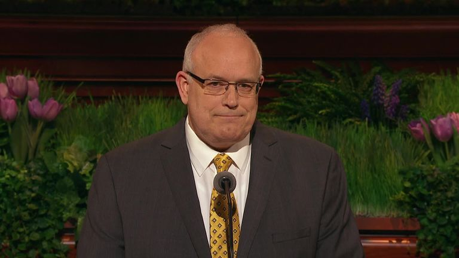
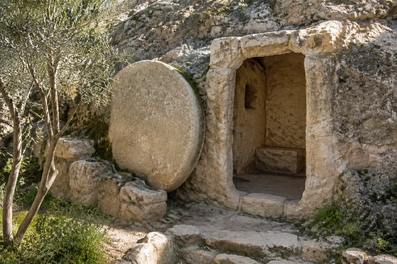
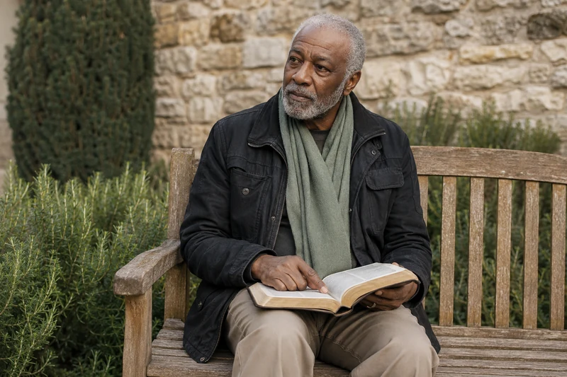
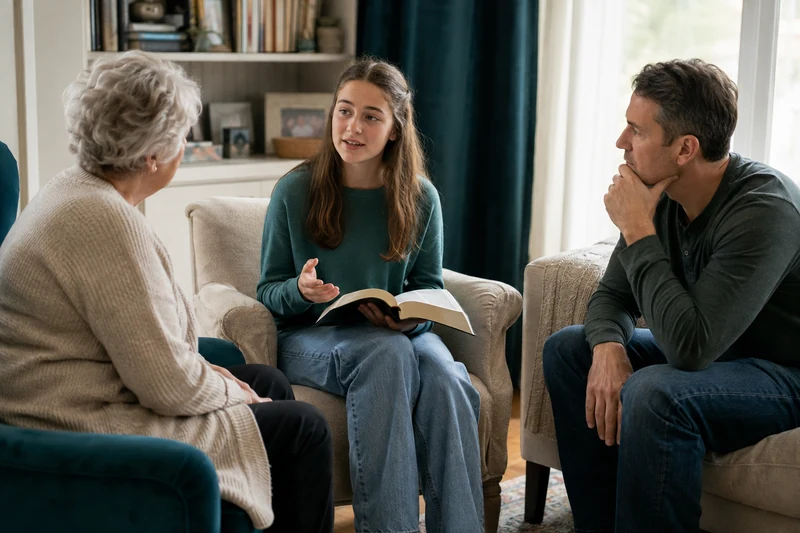
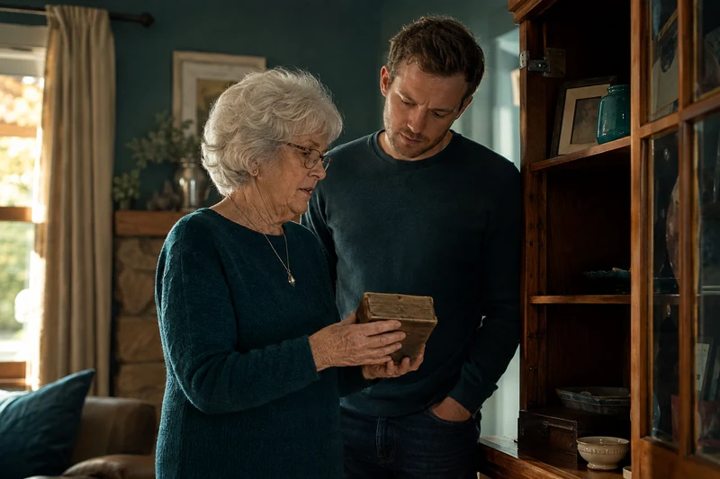
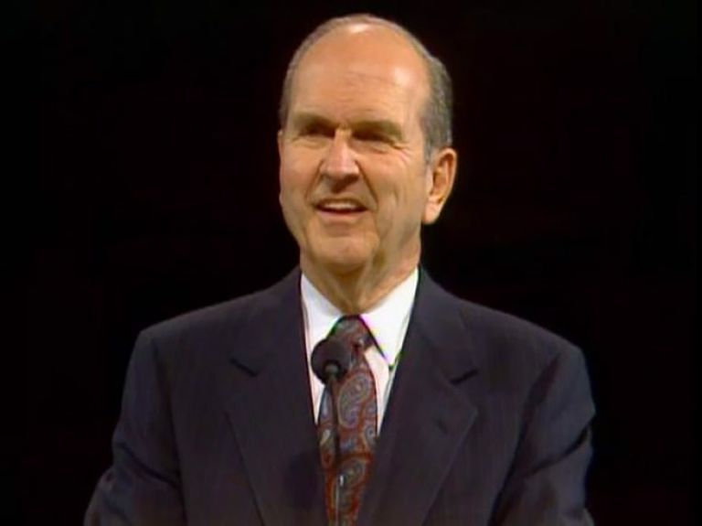

General conference video and text
And There Shall Be No More Death
The Church of Jesus Christ of Latter-day Saints · April 2016
Study Jesus Christ · Life After Death
What Do Latter-day Saints Believe Happens After Death?
ContinueLatter-day Saints believe death is a temporary separation of body and spirit, not the end of personal existence. Because Jesus Christ rose from the dead, every person will eventually be resurrected.
Watch and study
Begin with the event at the center of Christian hope, then follow its meaning for body, spirit, and eternal life.
John 20:1-18 follows Mary Magdalene from an empty tomb to an encounter with the risen Jesus. At first, she believes His body has been taken. When He addresses her by name, she recognizes Him and later tells the disciples that she has seen the Lord.

General conference video and text
The Church of Jesus Christ of Latter-day Saints · April 2016
In the accompanying message, Elder Paul V. Johnson reflects on resurrection after his adult daughter's death from cancer. He teaches that Christ makes the reunion of spirit and body permanent. Read his message beside Mary's witness: Christian hope rests in a living Savior. The talk includes an account of illness and loss, so you may prefer to read only the doctrinal paragraphs today.
For reflection: when you ask about life after death, are you seeking to understand resurrection, to consider a loved one's future, or to find help with today's absence? Naming the question can help you choose the next part of this study.
At physical death, the mortal body and the spirit separate. Latter-day Saints believe the spirit remains conscious and personal and enters a postmortal spirit world while awaiting resurrection.
Church teachings describe the spirit world as including paradise and spirit prison. The righteous experience peace and rest, while the gospel is also taught to those who did not receive a full opportunity to accept it during mortal life. This belief is one reason Latter-day Saints perform proxy ordinances for the dead in temples.
Resurrection is a universal gift made possible by Jesus Christ. Body and spirit will be reunited in an immortal condition. Latter-day Saints distinguish this universal victory over physical death from salvation from sin, which is made possible by Christ’s grace and received through faith, repentance, and the gospel covenant path.
After resurrection comes judgment. Latter-day Saint scripture teaches that God judges perfectly, taking account of works, desires, knowledge, and the response a person makes to the light received. The ultimate purpose of God’s plan is not merely survival after death but eternal life with Him through Jesus Christ.
This doctrine does not erase grief. Latter-day Saints mourn death and loss. But belief in Christ’s Resurrection changes the meaning of death: separation is temporary, resurrection is certain, and relationships formed in faithful covenant can continue beyond the grave.
You may understand these beliefs and still feel the absence of someone you love. There is room for both. If your loss is the death of a child, the study on child loss discusses the promises concerning little children and questions about older children. The study on faith during trials offers a place to consider support for today.
These passages are worth reading slowly rather than using them to close a painful conversation. They teach hope in Christ; they do not give us a complete account of another person's eternal circumstances. If a question concerns someone you love, it is all right to name what you hope for and what you do not yet understand.

Explore and study
Morning light enters an open garden tomb, holding the astonishment and hope of the Resurrection. Mary's grief gives way when the risen Jesus calls her by name.
Alma 40:11-14, 21-23 distinguishes the condition of spirits after death from the eventual reunion of spirit and body. Read those parts together. Latter-day Saint teaching does not use spirit world and resurrection as interchangeable names for the same event.

Explore and study
In a quiet garden, an older man pauses over Alma's words about the life of the spirit after death. The promise of resurrection through Jesus Christ brings hope close to the memories he carries.
Doctrine and Covenants 138:29-35, 58-59 describes the gospel being taught among the dead and connects that teaching with ordinances performed by living people. This is an important source for understanding why temple service for the dead is meaningful to Latter-day Saints. It is presented here as their scriptural teaching, not as an independently observed account of the afterlife.
These teachings give a framework for hope without supplying a detailed map of every person's experience. It is wise to distinguish what a passage teaches from things we wish it answered. Avoid filling those gaps with confident stories about a loved one's current activities or reasons for their death.

Explore and study
Three generations gather around the resurrection account and listen to one another. Shared hope in the risen Christ can hold both testimony and honest questions.
How do beliefs about agency, the spirit world, and resurrection explain proxy ordinances? The temple page develops that connection. If you are reading because of a recent loss, the grief resources may be a gentler next step than more doctrinal detail today.
Watch and study

Explore and study
A grandmother shares a keepsake and memory with her grandson. Remembering someone who has died can hold present sorrow beside hope in Christ's Resurrection.
Explore and study
A neighbor tends a small herb garden for someone who needs help. Such quiet service gives present purpose to Paul's promise that faithful labor in the Lord is not in vain.
In 1 Corinthians 15:12-22, Paul answers people who question resurrection. He explains that his preaching and their hope depend on Christ truly rising. In verses 42-44 and 51-57, he describes mortality giving way to immortality and credits God with victory through Jesus Christ.

General conference video and text
The Church of Jesus Christ of Latter-day Saints · April 1992
In Doors of Death, Elder Russell M. Nelson distinguishes physical death, the spirit world, resurrection, and judgment. His closing invitation is to use the time we have to care more generously for others. After reading or watching, find one claim about resurrection in Paul's words. Then read his closing invitation in verse 58: hope in Christ gives meaning to faithful work now. As a personal application, consider one act of care for a living person whose life touches yours.
Explore proxy ordinances, agency, and the hope of family relationships.
Find a gentler discussion of grief, salvation, and practical care.
{kind=link}
{kind=link}